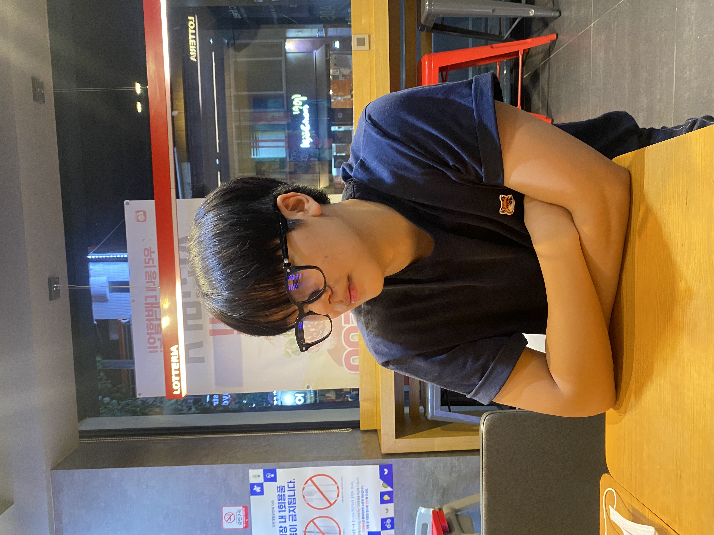
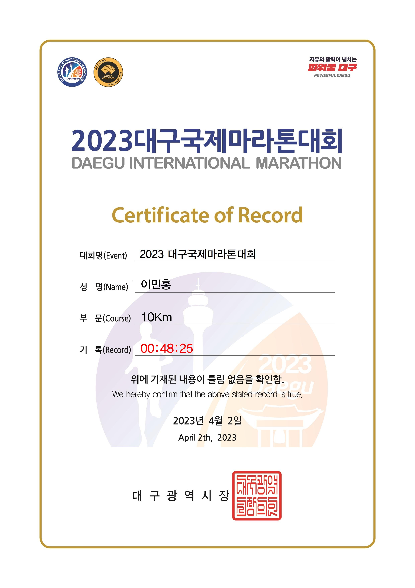
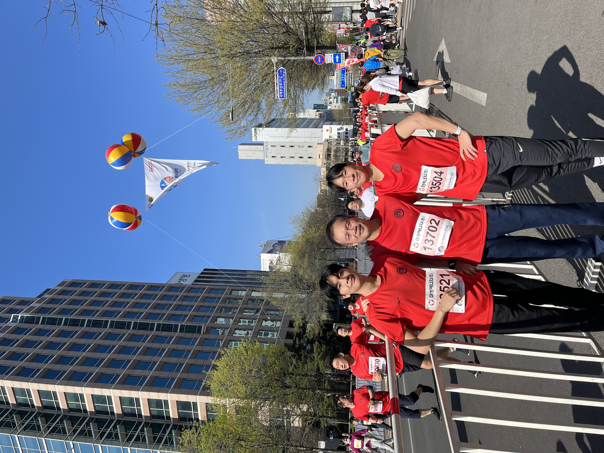

- Lee Minhong -
32193087
단국대학교
@2keciki
학과: 소프트웨어학과
나이: 24 (2000.09.01)
출생: 경상북도 구미시
거주지: 경기도 용인시
취미: 러닝, 음악 감상
번호: 010-5546-4272
메일: zif04045@naver.com
취미로는 러닝을 주로 하고 음악 감상이나 스포츠경기 보는 것을 좋아합니다.
어릴 적부터 디지털기기들에 관심이 많았고
컴퓨터 오락부터 편집 등 컴퓨터로 하는 모든 작업들에 대해 흥미가 있었습니다.
경구고등학교 졸업하였고 단국대학교 소프트웨어학과에 입학하였습니다.
1학년 시기에 컴퓨터와 관련된 새로운 정보들을 많이 접했고 전공에 대해 알아갈 수 있었습니다.
2020 2월, 군휴학을 하였고 1년 6개월의 군생활을 마쳤습니다.
2021년 2학기에 복학을 하였고 현재 재학 중입니다.
아직 관심 분야가 다양해서 정확한 세부 전공 분야에 대해서 탐색 중에 있습니다.
|  |  |
-2023.04.02 대구국제마라톤대회-
-좋아하는 노래-